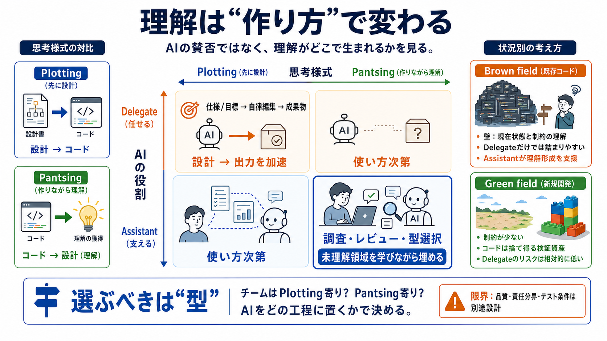

AI Code Review Trends: Human Review Diminishing, Greenfield vs Brownfield Adoption | Nikita Ivanov posted on the topic | LinkedIn
* [Report this post](https://www.linkedin.com/uas/login?session_redirect=https%3A%2F%2Fwww.linkedin.com%2Fposts%2Fniva…

「AIの賛否」ではなく、AIが開発者の思考様式（plotting / pantsing）と役割（delegate / assistant）をどう変えるかを整理します。
AIを「使う／使わない」の議論がズレやすいのは、賛否の分かれ目が“成果物”より“理解の生成プロセス”にあるからです。
plottingは「書く前に設計（世界観）を作り込む」発想、pantsingは「書きながら理解を抽出・更新する」発想です。
plottingではコードは設計の表現、pantsingでは設計（理解）がコードから生まれます。ここが核です。
デリゲート（delegate）は目標から自律的に編集して成果物へ直結、アシスタント（assistant）は人間が制御して補完します。
一般的傾向として、delegateはplottingを強めやすく、assistantはpantsingを補強しやすいと整理されています。
既存（brown field）では全体像の理解が欠けがちで、仕様→出力に直結するdelegateでも本質的な詰まりが解けない可能性があります。
assistantはPR整合性や探索の補助などで、人間が制御しつつ理解形成を支えやすい、と述べられています。
green fieldでは要件が未完成でも制約が相対的に少なく、コードが検証のための“能力”になりやすいのでdelegateのリスクが小さくなり得ます。
pantsingには“学ぶための遊び（play）”や試行錯誤の喜びが含まれます。AI生成はその“理屈の手触り”を減らしうるため、「楽しさが奪われる」感覚に繋がります。
必要な知識は頭・仕様・コードなどに存在しても、plottingは既存モデルを外へ押し出し、pantsingは世界（挙動やコード）から内へ引き出して経験を作ります。
課題はAIが思考様式をどう変えるかです。自分の開発の型に合うAIスタイルを選ぶべきだ、という結論になります。
強みはAI論争を“善悪/効率”から外し、理解の生成場所へ接続している点です。一方で、因果の検証条件（テスト品質、責任分界など）が不足しており、条件付き運用が必要です。
このスライドは、ユーザー提供の本文要約（plotting/pantsing、delegate/assistant、brown field/green field、私見）を再構成したものです。元記事や固有名がある場合は、追加情報に合わせてリンク表記に置き換えます。
* [Report this post](https://www.linkedin.com/uas/login?session_redirect=https%3A%2F%2Fwww.linkedin.com%2Fposts%2Fniva…
AI-assisted coding initially increases output by around 30 to 40%. AI works more efficiently with new (greenfield) proje…
| | | | --- | | danpalmer 5 months ago | parent | context | favorite | on: Two kinds of AI users are emerging I've n…
Where does LLM-assisted software development actually help with development productivity, and where does it fall short o…
We asked 69 participants (34 BSc and 13 MSc students, 8 researchers, and 14 professional developers) to perform two code…